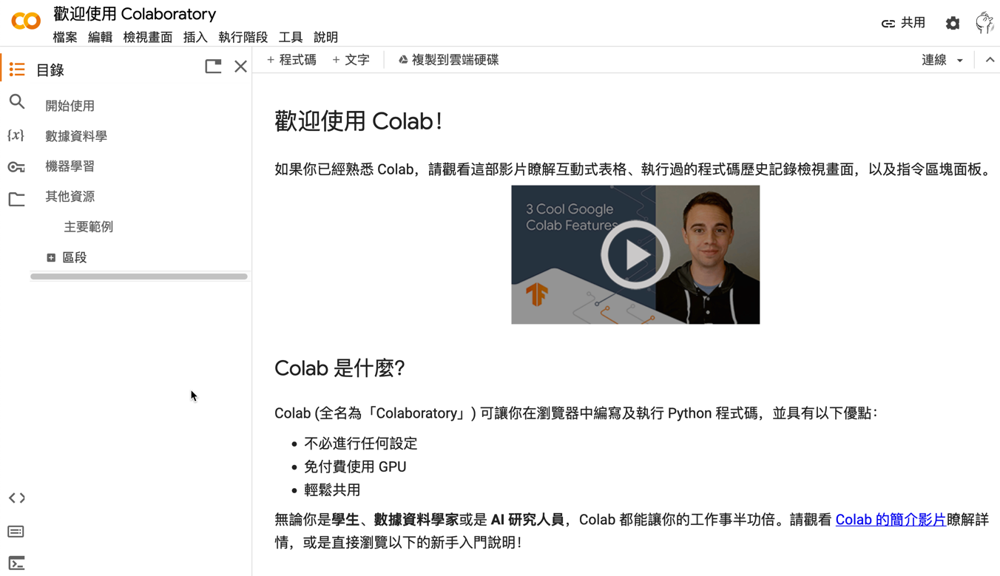
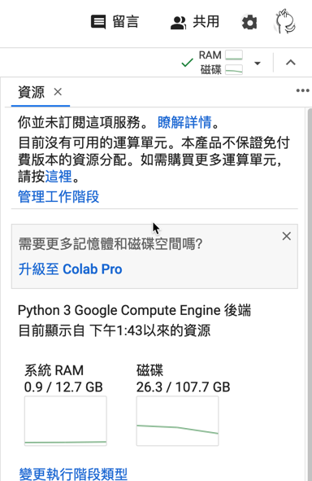
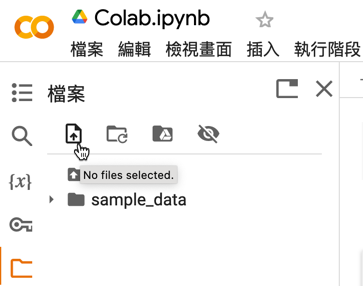

CoLab
Table of Contents

Google Colaboratory 是一個基於雲端的Python開發環境，由Google提供開發者虛擬機，提供免費的GPU和TPU資源，並支援Python程式及機器學習TensorFlow演算法。Google Colab具有強大的協作功能，可以與他人共享和編輯程式碼，支援Jupyter筆記本，並提供預裝的Python套件，方便進行數據分析、機器學習等任務。

Figure 1: Google Colaboratory
1. Colab編寫環境
當我們透過瀏覽器連上、登入Colab，Google就幫我們建立了一個虛擬機，我們在上面寫的程式就在Colab的虛擬機上執行。
- 20231111專題式程式教學1-Colab環境.ipynb
- 儲存格的類型
- Text Cell
- 練習1
- Code Cell: 輸出
- Code Cell: 輸入
1.1. Colab的預設目錄
Colab的虛擬機有CPU、記憶體、磁碟空間等資源(如圖2)

Figure 2: Colab虛擬機的系統資源
預設的磁碟所在目錄位置為/content，裡面有一個資料夾sample_data
1: !pwd 2: !ls
/content sample_data
1.2. 上傳檔案到Colab中
在Colab中執行AI相關的運算有時需要將你自己的檔案上傳到Colab的雲端磁碟中，這些檔案也許是你想要辨識的圖片、也許是你想進行預測結果的實驗數據。有兩種模式可以將你的檔案儲存到磁碟中：
- 有時效的Colab雲端硬碟
有兩種方式: 網頁模式與程式模式，要留意的是這些上傳的檔案在Colab執行階段被刪除後就會消失，就算我們沒有手動刪除現行的Colab運算，這個運算在12小時後也會被自動刪除。
- 網頁模式
第一種方式是直接點選點圖3中的上傳圖案，選取本地端的檔案後上傳至雲端硬碟中

Figure 3: 將檔案上傳至Colab雲端硬碟
- 程式模式
第二種方式是引入google.colab，使用files.upload()函式來上傳檔案
1: from google.colab import files 2: uploaded = files.upload()
Figure 4: 使用程式上傳本地端檔案
- 網頁模式
- 從Colab連線到自己的Google drive
前述模式只能儲存臨時的檔案，十分不方便。第二種方式是 允許 Colab直接存取我們的Google Drive (這個動作在作業系統的世界裡叫做mount)，有兩種方式可以完成此項設定：
- 網頁操作
- 點選圖5中的“掛載雲端硬碟”圖示
- 在對話框中點選“連網至Google雲端硬碟”
完成後，在現行目錄下會多出一個drive的資料夾。
.gif)
drive資料夾裡還有幾個資料夾，其中MyDrive就是你自己的雲端硬碟，如果有其他人曾經透過Google Drive分享檔案給你，那你還會看到SharedDrives資料夾。
Figure 5: Colab連結Google Drive
- 點選圖5中的“掛載雲端硬碟”圖示
- 程式執行
第二種連結Google Drive的方式是執行以下程式
1: from google.colab import drive 2: drive.mount('/content/drive')
因為是程式執行，其實你也可以自行為這個被mount的資料夾命名，例如叫做GDrive:
1: from google.colab import drive 2: drive.mount('/content/gDrive')
- 網頁操作
1.3. Colab的notebook存在哪?
我們在Colab所輸入的指令、程式執行的結果都儲存在一個副檔名為ipynb的筆記本中，這個檔案的預設檔名為UntitledX.ipynb(如圖6)，預設的儲存資料夾是在Google Drive裡的Colab Notebooks資料夾裡(如圖7)。請養成習慣把這些UntitledXX的檔名修改成符合筆記本內容的名稱，否則以後你會在Colab Notebooks裡看到Untitled0.ipynb、Untitled1.ipynb、Untitled2.ipynb、Untitled3.ipynb…..Untitled30.ipynb這樣的畫面Q八Q。
Figure 6: Colab筆記本
Figure 7: Colab筆記本的儲存位置
2. GPU執行階段
2.1. 如何確定有在跑 GPU:
1: import tensorflow as tf 2: gpu_name = tf.test.gpu_device_name() 3: if gpu_name != '/device:GPU:0': 4: raise SystemError('無 GPU') 5: print(f'有 GPU: {gpu_name}')
2.2. 在CoLab中使用GPU
- 執行階段/變更執行階段類型
- 硬體加速器
Figure 8: 標題
Figure 9: 標題
3. 進階操作
3.1. Command Line
Colab 其中一個厲害的地方就是，你除了可以執行 Python、也能執行 Command Line，只要在 Command Line 指令加上驚嘆號就能做到，像是 !mkdir。你可以在 Colab 裡 Python 程式碼寫到一半的時候，突然加進幾行 Command Line 來操作檔案，完成後，再讓 Python 程式碼接著寫下去，Python 與 Command Line 可以無痛切換。更厲害的是，Colab 甚至讓你在同一段程式碼裡 Python 和 Command Line 能夠 混合使用，例如，可以把 !ls 輸出的內容存進 Python 變數裡1。
此外，Colab 還有「魔法」指令（Magic Command），這個指令的寫法是在最前面加上 % 或 %% 符號，例如 %timeit，Magic 為 Colab 補充一些方便的功能。筆者最常用的功能有二：
- %%timeit：算出你的程式碼區塊花多少時間執行，分析你的演算法效率時很好用
- %run my_script.py：執行你的另一個 Python 程式，如果你的程式還需要呼叫另一個程式，就需要使用這個 Magic 指令
3.2. Google 提供的 VM
1: !pwd 2: !cat /proc/meminfo 3: !cat /proc/cpuinfo
- use colab to mount google drive
- 同時最多 5 個 session
- 每個 session 最多 24hr
查看 colab 已安裝了哪些 package
1: !pip list